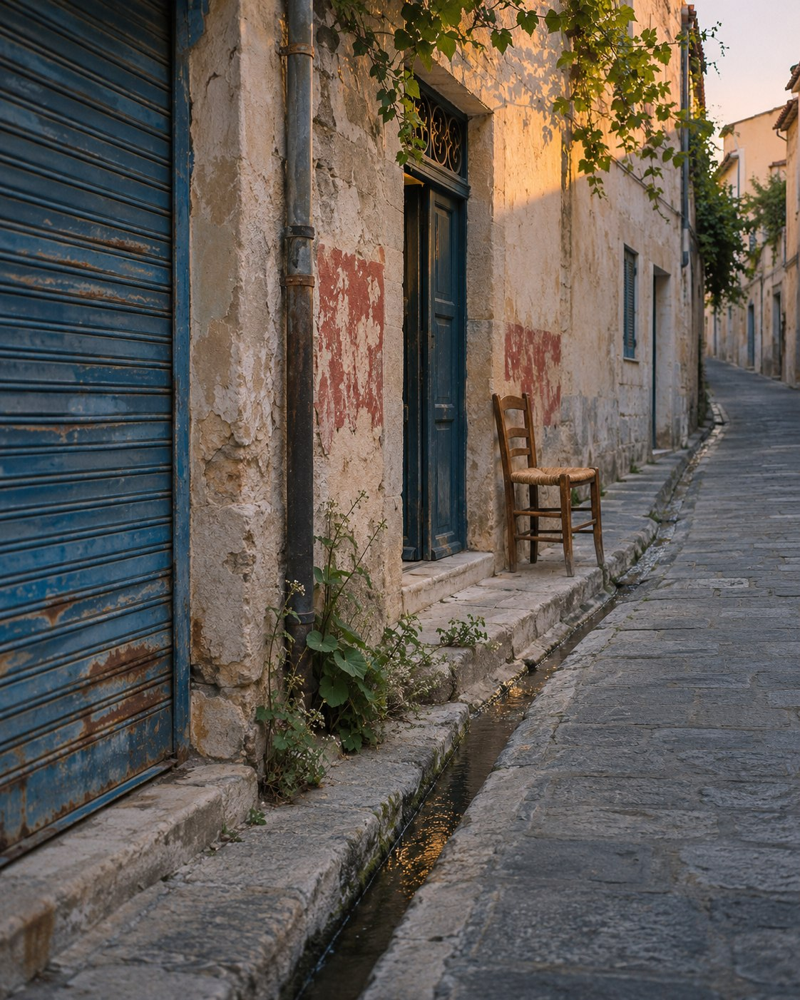

After closing.
A shutter, a chair, a little water. Three ways into an ordinary street.

There is time
to look again.
A record of your noticing
Field Notes
An ordinary street, looked at closely.
A shutter, a chair, a little water. Three ways into an ordinary street.

There is time
to look again.
A record of your noticing